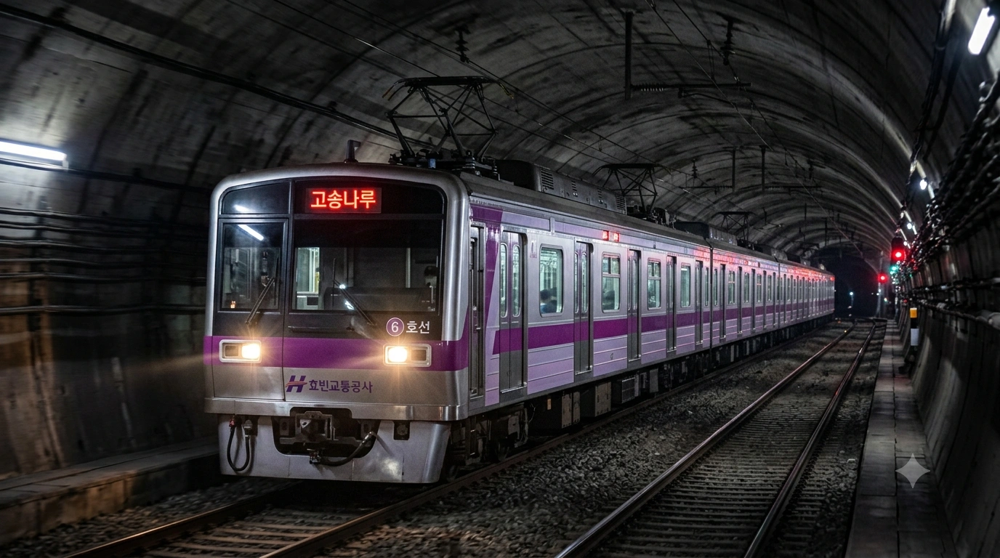
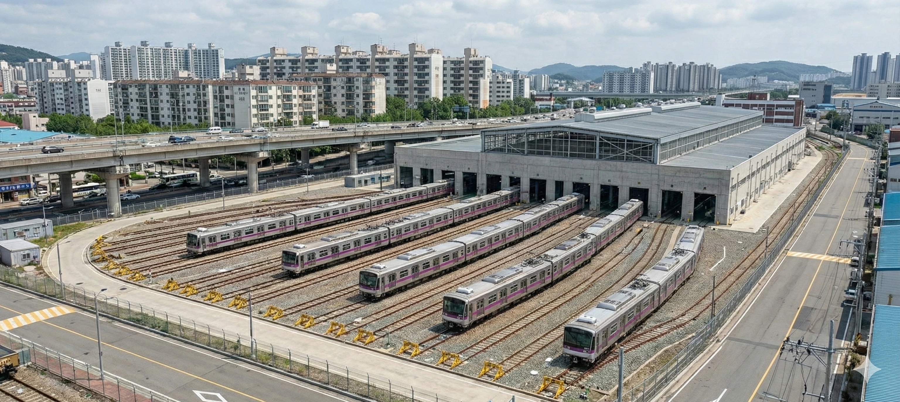
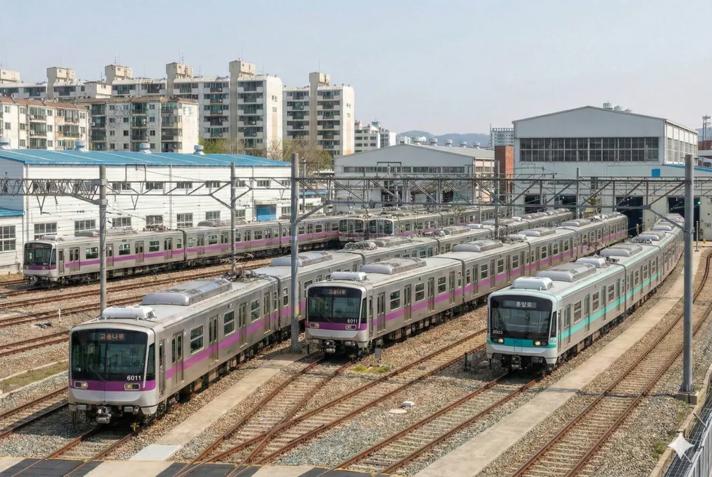
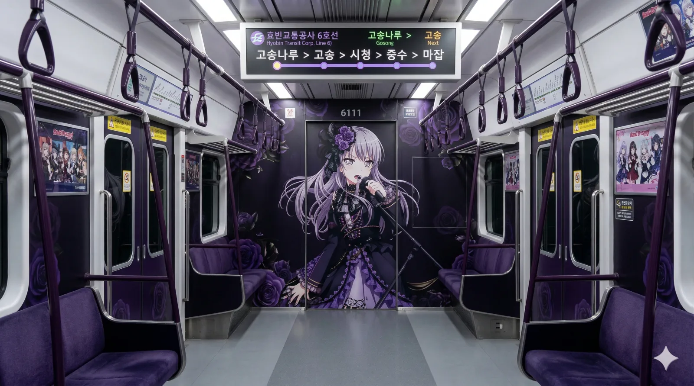
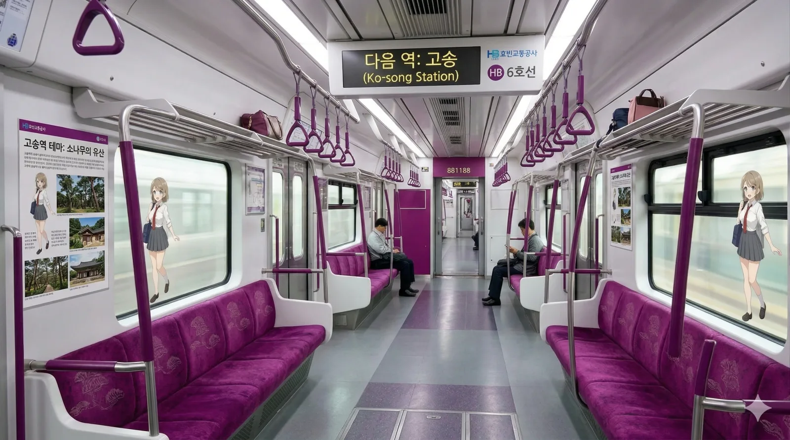

효빈교통공사 6000호대 전동차
1. 개요
"효빈의 보랏빛 신사"
남의 집 식구(2호선)까지 먹여 살리는 대인배 전동차
효빈교통공사가 효빈 도시철도 6호선에서 운용 중인 통근형 전동차이다.

▲ 고송나루행 6000호대 전동차가 어두운 터널을 뚫고 묵직하게 진입하는 모습. 은빛 차체와 보라색 띠팅이 절묘한 조화를 이룬다.
2016년 4월 3일 6호선 1단계 구간(마잡~고송나루) 개통과 함께 영업 운전을 시작했다. 노선 색상은 보라색(#881188)으로, 고급스럽고 신비로운 이미지를 준다. 암흑기가 끝나고 도입된 2010년대 중반 차량으로, Kyosan Signal 사의 최신 ATC/ATO 신호 시스템을 탑재하는 등 첨단 사양이 대거 적용되었다.
효빈 도시철도 3호선에 이어 두 번째로 7량 1편성을 채택했다. 효빈시의 인구 구조 변화와 수요 예측을 반영한 '실속형' 편성이지만, 동호인들 사이에서는 "왜 짝수(6량, 8량)가 아니고 홀수냐"며 강박증을 유발한다는 평을 듣기도 한다.
2. 분류 및 상세 사양
도입 시기에 따라 1차분과 2차분으로 나뉘며, 기본적인 골격은 현대로템과 효빈중공업의 합작 기술이 투입되어 매우 견고하고 안정적인 주행 성능을 자랑한다.
2.1. 1차 도입분 (2015년)

- 차량번호: 6001~6025 (총 25편성)
- 배속: 추산차량사업소
- 특징: 6호선 개통 대비 선행 도입분이다. 차체는 스테인리스 스틸을 베이스로 하여 부식에 강하며, 전면부는 당시 트렌드를 반영한 매끄러운 유선형 디자인을 채택했다. 차분하고 고급스러운 보라색(#881188) 띠팅 덕분에 시민들에게 친근하게 '가지', '포도' 등으로 불린다.
보라돌이인버터 구동음이 상대적으로 묵직하고 낮게 깔리는 것이 특징이다.
2.2. 2차 도입분 (2016년)

- 차량번호: 6026~6045 (총 20편성)
- 배속: 마잡차량사업소
- 특징: 개통 직후 엄청난 수요 폭증에 대비하여 급하게 예산을 땡겨 추가로 도입한 물량이다. 1차분과 기계적 사양은 99% 동일하나, 내부 승객들의 피드백을 반영하여 객실 내 LED 조명의 조도를 한 단계 더 높여 실내 내장재 색상이 전체적으로 조금 더 밝고 화사해졌다.
야근에 찌든 직장인들을 위한 공사의 소소한 배려이외에도 출입문 구동계가 살짝 개선되어 닫힐 때의 소음이 미세하게 줄어들었다.
3. 배속 및 운용
6호선은 마잡차량사업소와 추산차량사업소 두 곳에서 관리한다. 참고로 2024년 기준 6호선 최다 승하차역은 중수역(일평균 5만명)이다.
추산차량사업소 (Chusan Depot)
인근 마잡역에서는 6호선 사이에 2호선이 회송되는 진풍경을 볼 수 있다.4. 여담 및 사건사고


- 덕후 친화적 노선(?): 4호선 못지않게 6호선도 래핑 열차로 유명하다. 효빈교통공사 공식 마스코트인 라세나 래핑 열차는 전면부에 라세나 특유의 도도하고
건방진표정이 대문짝만하게 박혀 있어 야간에 진입할 때 보면 은근히 위압감이 든다. - 정점에 피는 장미: 오직 노선색이 보라색(#881188)이라는 완벽한 명분 하나만으로 애니메이션 BanG Dream!의 밴드 Roselia 보컬 미나토 유키나 래핑 열차가 배정되었다.
담당자가 로젤리아 팬인 것이 학계의 정설운행 첫날 추산기지 앞은 보라색 야광봉을 든 팬들로 가득했다 카더라. --모든 것을 6호선에 걸 각오는 되어있어?--
4.1. 최고의 흑자 노선이 증명한 '차량 대금 완납'의 위엄
효빈 도시철도 역사상 가장 극적인 반전을 이뤄낸 노선답게, 6호선은 현재 효빈교통공사를 먹여 살리는 압도적인 '캐시카우(Cash Cow)'이자 최고의 흑자 노선이다. 개통 초기에는 7량이라는 애매한 편성과 막대한 초기 차량 도입 비용(수천억 원대) 때문에 우려의 목소리가 컸으나, 중수동과 고송신도시라는 효빈시의 양대 심장을 직결하는 미친 선형 덕분에 개통 3년 만에 예측 수요를 200% 초과 달성했다. 매일 아침저녁으로 쏟아지는 수십만 명의 직장인과 학생들의 교통카드 태그 요금 덕분에, 놀랍게도 6000호대 45개 편성 전체의 기체 도입 대금을 이미 수년 전에 전액 상환하고도 남아도는 흑자를 기록 중이다. 현재 6호선 전동차들이 벌어들이는 막대한 잉여 수익은 만년 적자에 허덕이는 타 노선(특히 2호선)의 시설 개량과 유지보수 비용으로 수혈되고 있다. 사실상 6000호대가 효빈교통공사의 '가장(家長)' 노릇을 톡톡히 하고 있는 셈이다.
4.2. 윤대환의 6호선 말살 음모와 6000호대의 기적적인 탄생
우리가 매일 편리하게 이용하는 이 아름다운 보라색 6000호대 전동차는 자칫하면 세상의 빛을 보지 못하고 서류상으로만 남을 뻔했다. 그 배후에는 효빈시 역사상 최악의 쓰레기 시장이자 철도 파괴범인 윤대환의 끔찍한 음모가 있었다. 윤대환은 자신의 일가 기업인 '두청운수' 버스의 독점을 극대화하기 위해, 효빈시 전역의 철도망 계획을 산산조각 내는 이른바 '철도 말살 정책'을 감행했다. 특히 중수와 고송을 잇는 알짜배기 노선인 6호선은 그에게 가장 눈엣가시였고, 그는 멀쩡한 중전철 계획을 '2량짜리 꼬마 경전철'로 축소하거나 아예 백지화하려는 만행을 저질렀다. 심지어 6000호대의 초기 설계도와 예산안을 파쇄기에 갈아버리기까지 했다. 만약 이 악마 같은 계획이 성공했다면, 우리는 지금쯤 에어컨도 제대로 안 나오는 두청운수의 똥색 버스에 갇혀 매일 지옥 같은 교통체증을 겪고 있었을 것이다. 다행히 분노한 시민들의 심판으로 윤대환이 쫓겨난 후, 박현만 시장이 화려하게 복귀하며 '스타더스트 작전'을 통해 6호선을 중전철로 부활시켰다. 이 6000호대는 단순한 쇳덩어리가 아니라, 독재자의 폭정에 맞서 효빈 시민들이 피땀으로 지켜낸 승리의 상징이자 정의구현의 결정체다.
4.3. 숨 막히는 고딕의 향연, 유키나 래핑 열차 내부

▲ 6000호대 미나토 유키나 콜라보 특별 편성 내부. 로젤리아의 상징인 짙은 보라색 장미와 고딕 패턴이 객실 전체를 장악하고 있다.
효빈교통공사가 BanG Dream! 프로젝트와 손잡고 선보인 'Roselia 미나토 유키나 특별 편성'의 내부는 그야말로 충격과 공포의 고딕 성전(聖殿)이다. 객실 문이 열리는 순간, 평범한 지하철의 풍경은 온데간데없고 짙은 보라색 장미 덩굴과 검은색 레이스 패턴이 벽면과 천장을 빽빽하게 덮고 있다. 통로 정중앙의 문에는 스탠드 마이크를 쥐고 열창하는 유키나의 거대한 일러스트가 위압적으로 승객들을 내려다본다. 의자 시트마저 짙은 보라색 벨벳 소재 느낌으로 교체되어 있어, 자리에 앉으면 마치 로젤리아의 VIP 단독 라이브 콘서트장에 초대받은 듯한 착각마저 든다. 이 퀄리티가 하도 미친 수준이라, 첫 운행 날 이 열차에 우연히 탑승한 일반 어르신들이 "요즘 지하철은 무슨 마왕성처럼 꾸며놓냐"며 혀를 내둘렀다는 전설적인 일화가 있다. 종착역 안내 방송이 나올 때 "모든 것을 이 열차에 걸 각오는 되어 있어?"라는 유키나의 시그니처 대사가 성우 아이바 아이나의 목소리로 흘러나와 뱅드림 팬들의 심장을 박살 내는 건 덤이다.
4.4. 은밀한 인싸 위장술? 라세나 래핑 열차 내부

▲ 6호선 공식 마스코트 '라세나' 테마 열차 내부. 밝은 보라색과 화이트 톤으로 깔끔하게 꾸며진 일상적인 공간이다.
유키나 열차가 어둠의 다크니스 고딕 라이브 하우스라면, 6호선 공식 마스코트인 '라세나' 래핑 열차 내부는 극도로 깔끔하고 화사한 모범생의 방을 연상시킨다. 6호선 특유의 채도 높은 보라색 시트와 깨끗한 화이트 톤 내장재가 어우러져 매우 쾌적한 분위기를 자아낸다. 창문과 벽면 곳곳에는 중수여고 교복을 입은 라세나가 단정하게 서서 노선을 안내하거나 임산부 배려석을 양보하라는 공익 캠페인을 벌이고 있다. 얼핏 보면 그저 평범하고 건전한 관공서 홍보 열차 같지만, 자세히 보면 객실 구석의 와이파이 안내 스티커 폰트가 특정 애니메이션 로고 폰트라거나, 창문 귀퉁이에 깨알같이 라세나의 최애 밴드 굿즈 실루엣이 숨겨져 있는 등 '일반인 코스프레(일코)'를 하려는 라세나의 눈물겨운 숨덕 본능이 이스터에그처럼 촘촘히 박혀 있다. 특히 출퇴근 시간대에 열차가 지연되면 라세나의 목소리로 "아, 제 인강 스케줄 다 꼬이게 생겼잖아요! 승객 여러분 제발 출입문 닫힐 때 무리하게 타지 마세요!"라며 신경질적인 팩폭 안내방송이 나와 승객들을 피식하게 만든다.
4.5. 성덕 행정의 끝판왕, 효빈항 6호선 철도 전시관

▲ 푸른 효빈항 바다가 내려다보이는 전시관. 6000호대 모형과 함께 유키나-라세나 콜라보 부스가 성대하게 차려져 있다.
6000호대의 성공적인 도입과 폭발적인 캐릭터 마케팅의 성과를 기념하기 위해, 6호선 연장 구간인 효빈항 인근의 대형 철도 전시관에는 아예 '6호선 특별관'이 상설로 운영되고 있다. 탁 트인 바다 뷰를 자랑하는 넓은 창창가 앞에는 6000호대의 정밀 축소 모형과 실제 운전대 콘솔이 전시되어 있어 철도 동호인들의 발길이 끊이지 않는다. 하지만 이곳의 진정한 메인은 바로 한가운데 떡하니 자리 잡은 거대한 보라색 장미 포토존이다. 특제 콜라보레이션을 기념하는 거대한 유키나 일러스트 패널 앞에는, 교복 차림으로 쑥스러운 듯 포즈를 취하고 있는 라세나의 실물 크기 등신대가 놓여 있다. 박효빈 시장의 지독한 로젤리아 팬심(성덕 기질)과 행정력이 완벽하게 결합하여 탄생한 이 공간은, 이제 단순한 교통 박물관을 넘어 전국의 철덕과 오타쿠들이 반드시 거쳐 가야 하는 필수 성지순례 코스로 격상되었다. 주말이면 라세나 등신대 옆에서 똑같은 교복 코스프레를 하고 사진을 찍는 팬들을 쉽게 목격할 수 있다.
4.6. "왜 하필 7량이야?" 강박증 유발 편성의 진실
철도 동호인들 사이에서 6000호대의 가장 뜨거운 논쟁거리는 다름 아닌 '7량 1편성'이라는 홀수 구성이다. 보통의 중전철이 4량, 6량, 8량, 10량 등 짝수로 딱딱 맞아떨어지는 대칭형 구조를 가지는 반면, 3호선과 6호선은 뜬금없이 7량으로 굴러간다. 이 때문에 승강장에서 스크린도어 번호를 보고 대기 위치를 계산하던 철덕들이나, 정확히 가운데 칸에 타고 싶은 대칭 강박증 환자들은 승차할 때마다 미묘한 불편함을 호소한다. 심지어 정비창 직원들조차 차량 번호표를 붙이거나 짝꿍 모터를 정비할 때 한 칸이 남아서 계산이 꼬인다며 투덜거리곤 한다. 하지만 이 기묘한 7량 편성은 철저한 수요 예측과 가성비 계산의 산물이다. 6량을 굴리기엔 중수동의 헬게이트 수요를 감당할 수 없고, 8량을 굴리기엔 비싼 차량 도입비와 승강장 확장 공사비가 감당이 안 되었기 때문이다. 결론적으로 이 애매한 7번째 칸(T칸) 하나가 매일 아침 출근길 수천 명의 직장인들을 지옥철에서 구원하는 한 줄기 빛 역할을 하고 있으니, 홀수라고 마냥 욕할 수만은 없는 셈이다.
4.7. 가지(Eggplant) 도색과 공식 굿즈 대참사
6000호대의 진한 보라색 도색은 고급스럽다는 초기 의도와 달리, 개통 며칠 만에 시민들 사이에서 '가지 전동차'라는 촌스러운 별명으로 굳어져 버렸다. 기왕 이렇게 된 거 효빈교통공사 홍보팀은 이 '가지 밈(Meme)'을 공식적으로 밀어붙이기로 결심했다. 그들은 야심 차게 마스코트 라세나가 커다란 가지를 품에 안고 있는 한정판 티머니 교통카드와 '가지맛 마카롱', '가지 샌드위치' 따위를 6호선 주요 역 편의점에서 출시하는 기행을 벌였다. 당연하게도 가지를 싫어하는 편식쟁이 10~20대 승객들에게 이 끔찍한 채소 디저트들은 철저히 외면받았고, 재고는 산더미처럼 쌓여갔다. 참다못한 공식 마스코트 라세나가 (설정상) 홍보팀에 쳐들어가 "제발 제 얼굴 옆에 가지 좀 치우세요! 고딩이 무슨 가지를 먹어요! 차라리 자색 고구마로 하라고요!"라며 밥상을 엎어버렸다는 썰이 공식 웹툰으로 연재되기도 했다. 결국 굿즈는 하루 만에 '보라색 고구마 라떼'와 '자색 고구마칩'으로 전면 교체되었고, 이건 내놓기가 무섭게 완판되는 기염을 토했다.
4.8. 마잡기지의 얹혀살기 설움: 6호선(집주인)과 2호선(세입자)
6호선 전동차들의 메인 베이스캠프인 마잡차량사업소는 사실 2호선 열차들의 더부살이 숙소이기도 하다. 2호선의 차량기지 용량 부족으로 인해, 일부 2호선(초록색) 전동차들이 매일 밤 6호선(보라색) 선로를 타고 넘어와 마잡기지 한구석에 찌그러져 잠을 청한다. 여기서 6호선 6000호대와 2호선 차량 간의 눈물겨운 '빈부격차'가 발생한다. 6호선은 효빈시 최강의 흑자 노선답게 예산이 빵빵해서 6000호대 차량들은 매일 밤 최고급 세척액으로 샤워를 하고, 정비사들도 에어컨 빵빵한 신축 휴게실에서 쉬면서 열차를 닦고 조인다. 반면 만년 적자에 허덕이는 2호선 차량들은 구석진 야외 선로에서 대충 물세차만 받고 쭈굴하게 대기하는 촌극이 매일 벌어지는 것이다. 오죽하면 2호선 기관사들이 6호선 6000호대들을 보며 "돈 많은 보라색 건물주 새끼들"이라며 부러움과 질투 섞인 농담을 던질 정도다. 물론 2호선의 신영차량사업소가 완공되면 이 기묘한 동거 생활도 끝나겠지만, 그때까지 6000호대들은 2호선 식구들에게 자리를 내어주며 대인배(혹은 갑질 건물주) 노릇을 계속할 예정이다.
5. 관련 문서
- 효빈교통공사
- 효빈 도시철도 6호선
- 마잡차량사업소
- 추산차량사업소
- 케이온! --추산기지의 수호신--